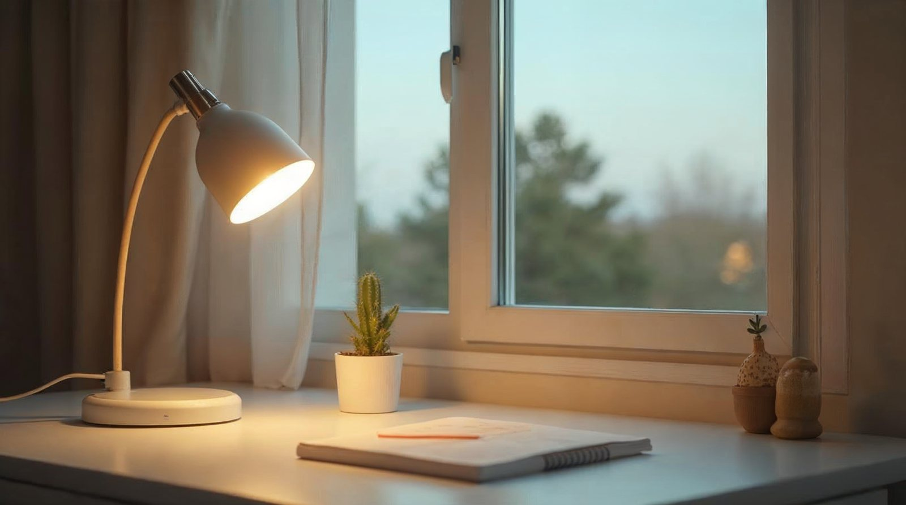
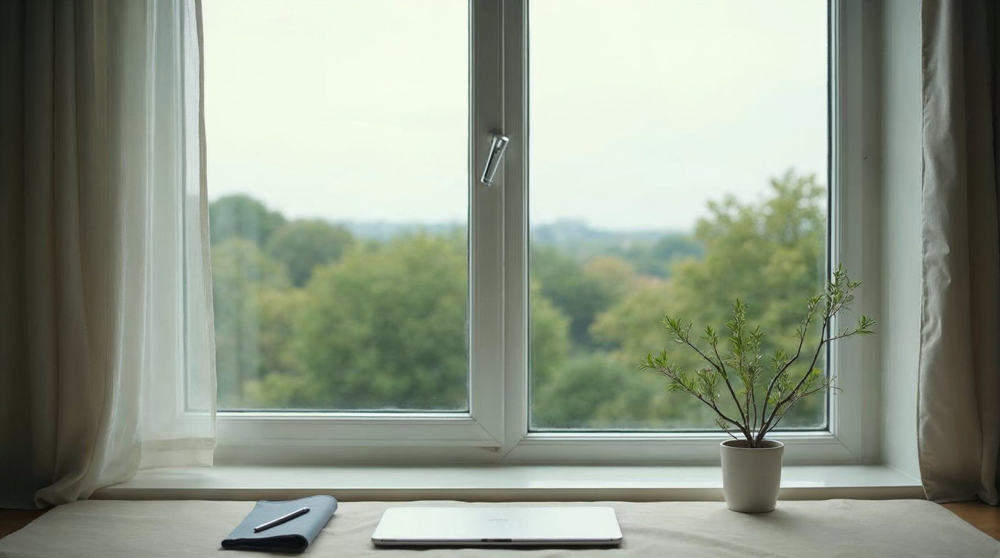
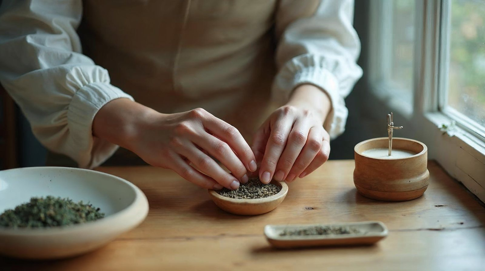
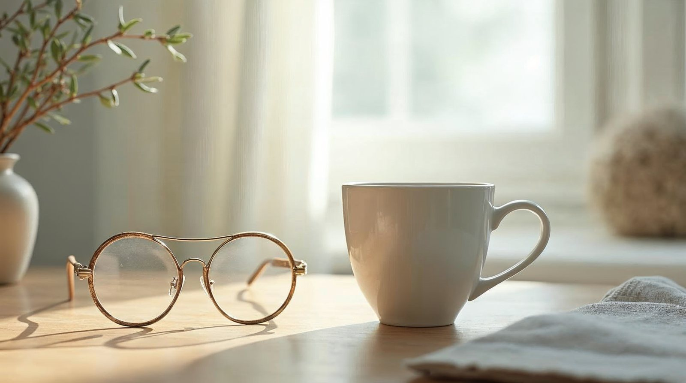
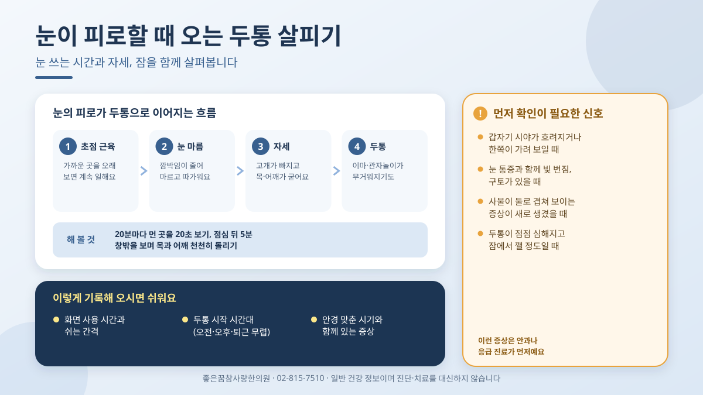

이종호 한의사 감수좋은꿈참사랑한의원 대표원장 (한의사 면허번호 19769)발행 2026-11-22 · 수정 2026-11-26
이 글의 차례
- 왜 이런 불편이 생길 수 있나요
- 눈이 마르면 왜 더 피곤할까요?
- 화면을 보는데 왜 목과 어깨까지 아플까요?
- 눈 피로 두통과 다른 두통은 어떻게 구분하나요?
- 예를 들면 이런 경우입니다
- 스스로 점검해 보세요
- 먼저 이렇게 여쭙니다
- 일상에서 먼저 해 볼 수 있는 것
- 책상, 이렇게 맞춰 보세요
- 눈 주변을 쉬게 하는 간단한 방법
- 이를 악무는 습관도 같이 봐요
- 자주 하는 오해
- 한의원에서 함께 살필 수 있는 경우
- 밤 화면은 잠까지 흔들어요
- 이런 생활에서 눈 피로를 더 자주 느끼기도 해요
- 처음 오시면 이렇게 살펴봅니다
- 얼마나 지켜보고, 언제 진료를 받을까요
- 이렇게 기록해 오시면 상담이 쉬워집니다
- 이런 증상은 먼저 확인이 필요합니다
화면을 오래 보거나 가까운 글씨를 읽은 뒤 눈 뒤쪽과 이마가 조이는 듯 아프다면, 눈의 피로와 함께 목과 어깨의 자세를 같이 살펴보는 것이 좋습니다. 눈을 오래 쓰는 동안 몸은 앞으로 쏠리고 어깨에 힘이 들어가기 쉽기 때문입니다. 시력이 갑자기 달라졌다면 두통보다 눈의 확인이 먼저입니다.
진료실에서 이런 말씀을 자주 들어요. "원장님, 오후 네 시만 되면 눈 뒤가 묵직하고 이마가 조여요." 하루 종일 화면을 보는 생활이라면 원래 그럴 수 있어요. 눈도 근육으로 일하는 기관이라, 하루 종일 쉬지 않고 쓰면 지치는 게 당연한 거예요.
그래서 저는 눈만 따로 보지 않아요. 눈을 쓰는 동안 고개와 어깨는 어떤 자세였는지, 잠은 충분했는지, 쉬는 간격은 있었는지를 같이 봐요. 눈이 피곤한 날은 대개 몸 전체도 같이 버티고 있었던 날이거든요.
왜 이런 불편이 생길 수 있나요
- 가까운 곳을 오래 보면 초점을 맞추는 눈의 근육이 계속 일을 해 눈 주변이 뻐근해질 수 있습니다.
- 화면에 집중하면 눈을 깜박이는 횟수가 줄어 눈이 마르고 따가워지기 쉽습니다.
- 화면 쪽으로 고개가 빠지는 자세가 이어지면 목 뒤와 어깨가 굳어 이마와 관자놀이까지 무거워지는 분들이 있습니다.
- 안경이나 렌즈 도수가 지금 눈에 맞지 않으면 같은 시간을 봐도 더 피곤할 수 있습니다.
그러니까 사실은 눈 안의 초점 근육은 가까운 걸 볼 때 계속 힘을 주고 있어요. 무거운 장바구니를 팔을 구부린 채 몇 시간 들고 있는 것과 비슷한 거예요. 먼 곳을 보면 그 팔을 잠깐 내려놓는 거고요. 그래서 20분마다 먼 곳을 보라고 권하는 거예요.
여기서 두 가지를 나눠서 보셔야 해요. 눈이 피곤한 것과 시력이 떨어진 것은 다른 얘기예요. 피곤한 눈은 쉬면 한결 덜해지는 경우가 많지만, 시력이 변한 거라면 쉬어도 계속 흐리게 보여요. 그래서 오래 안경 도수를 점검하지 않았다면 안과 검진을 먼저 권해요.
눈이 마르면 왜 더 피곤할까요?
화면에 집중하면 눈을 깜박이는 횟수가 확 줄어요. 깜박임은 눈에 눈물을 고르게 발라 주는 와이퍼 같은 거라, 와이퍼가 덜 움직이면 눈 표면이 마르고 뻑뻑해져요. 그러면 초점을 맞추는 데 더 힘이 들고 눈 주변이 금세 지치는 거예요.
겨울에는 난방 때문에 실내가 건조해서 이게 더 심해져요. 바람이 얼굴로 바로 오는 자리, 히터 앞자리라면 자리 방향을 조금만 바꿔도 덜 마른다는 분이 많아요. 렌즈를 오래 끼는 분도 눈이 더 쉽게 마를 수 있어요.
나이가 들면서 가까운 글씨가 점점 흐려지는 것도 원래 그런 자연스러운 변화예요. 그런데 그걸 모르고 예전 안경으로 버티면 눈이 초점을 맞추느라 더 애를 쓰고, 그게 두통으로 이어지기도 해요. 겁낼 일은 아니고, 지금 눈에 맞는 도수로 바꿔 주면 되는 거예요. 그래서 마흔 즈음부터 가까운 게 불편하다면 안과에서 한번 점검받아 보시길 권해요.
화면을 보는데 왜 목과 어깨까지 아플까요?
화면에 집중하면 몸은 자기도 모르게 화면 쪽으로 다가가요. 고개가 앞으로 쭉 빠지고 어깨는 올라가고 등은 둥글게 말리죠. 머리는 생각보다 무거워서, 고개가 앞으로 빠질수록 목 뒤 근육이 그 무게를 붙잡느라 하루 종일 일을 해요.
그 근육들이 뒷머리와 관자놀이 쪽으로 이어져 있어서, 오후가 되면 눈 뒤와 이마까지 묵직하게 조여 오는 거예요. 그래서 눈 피로 두통으로 오신 분도 목과 어깨를 꼭 같이 만져 봐요. 눈만 쉬게 해서는 남는 두통이 이 자리에서 오는 경우가 많거든요.
운동을 세게 하실 필요는 없어요. 한 시간에 한 번 일어나 몇 걸음 걷고, 어깨를 뒤로 천천히 돌려 주는 정도면 돼요. 약하게, 대신 자주요. 그게 하루에 한 번 몰아서 세게 하는 것보다 훨씬 좋아요.
눈 피로 두통과 다른 두통은 어떻게 구분하나요?
화면을 본 뒤 오는 두통이 다 눈 때문은 아니에요. 아래처럼 나눠서 보시면 도움이 돼요.
- 일하는 동안 심해지고 주말이나 쉬는 날엔 덜하다면 눈의 피로와 자세가 섞인 경우가 많아요.
- 이마와 광대를 누르면 아프고 누런 콧물이나 코막힘이 함께 있다면 코 쪽 문제가 없는지 이비인후과 확인이 필요할 수 있어요.
- 한쪽 머리가 욱신거리고 빛과 소리가 싫어지며 속이 메스껍다면 편두통 같은 모양에 가까워 따로 살펴봐야 해요.
- 아침에 일어날 때부터 머리가 무겁다면 화면보다 잠의 질이나 이 악무는 습관을 함께 봐야 하는 경우가 있어요.
예를 들면 이런 경우입니다
- 예를 들어 노트북 하나로 하루 종일 일하는 경우라면, 화면이 눈보다 한참 아래에 있어 고개가 계속 숙여지니 받침대로 화면을 올리는 것부터 해 봐요.
- 예를 들어 퇴근 뒤에도 누워서 휴대전화로 영상을 오래 보는 경우라면, 낮에 쓴 눈이 밤에도 쉬지 못하니 잠들기 한 시간 전에는 화면을 내려놓아 봐요.
- 예를 들어 작은 글씨 서류를 오래 보는 일을 하는 경우라면, 조명을 손 쪽으로 밝게 하고 글씨 크기를 키울 수 있는 건 키워서 보는 거예요.
스스로 점검해 보세요
- 한 시간 넘게 화면에서 눈을 떼지 않는 일이 잦다
- 화면이 눈높이보다 많이 낮거나 너무 가깝다
- 오후가 되면 눈이 뻑뻑하고 따갑다
- 안경 도수를 점검한 지 2년이 넘었다
- 일하다 보면 어깨가 귀 쪽으로 올라가 있다
- 잠들기 직전까지 휴대전화를 본다
- 아침에 일어날 때 턱이나 관자놀이가 뻐근하다
해당하는 항목이 여럿이라면 진료 때 표시해서 가져와 주세요.

먼저 이렇게 여쭙니다
- 하루에 화면을 보는 시간은 얼마나 되나요? 쉬는 간격은 어떤가요?
- 안경이나 렌즈 도수를 마지막으로 점검한 때는 언제인가요?
- 눈이 뻑뻑하거나 침침한 증상이 함께 있나요?
- 통증이 일하는 동안 심해지고 쉬면 가라앉나요?
- 아침에 일어날 때부터 머리가 무거운 날도 있나요?

일상에서 먼저 해 볼 수 있는 것
- 20분마다 먼 곳을 20초 정도 바라보며 눈 쉬게 하기
- 화면은 팔을 뻗은 거리쯤에 두고, 화면 위쪽이 눈높이보다 약간 아래에 오게 맞추기
- 화면 밝기를 주변 조명과 비슷하게 맞추고 의식적으로 눈을 자주 깜박이기
- 난방으로 건조한 날은 실내 습도를 챙기고 물을 나누어 마시기
- 점심 뒤 5분 정도 창밖을 보며 목과 어깨를 천천히 돌려 풀기
숙제는 하나만 드릴게요. 휴대전화에 20분 알람을 맞춰 두고, 울리면 창밖이나 먼 벽을 20초만 보세요. 딴 건 하던 대로 하셔도 돼요. 일에 빠지면 시간 가는 걸 잊기 쉬워서, 몸에 맡기기보다 알람에 맡기는 게 편하거든요.
조명도 한번 살펴 주세요. 방 전체는 어두운데 화면만 환하면 눈은 밝은 곳과 어두운 곳을 오가며 계속 조절하느라 더 지쳐요. 저녁에 일하실 때는 천장 조명을 켜 두고, 책상 위에 스탠드를 하나 더 두는 게 좋아요. 화면에 형광등이나 창문 빛이 비쳐 번쩍인다면 화면 각도를 조금 기울여 보세요. 작은 반사도 하루 종일 쌓이면 눈에는 꽤 큰 짐이 되거든요.
글씨 크기도 아끼지 마세요. 작은 글씨를 보려고 몸을 앞으로 내밀 바에는 화면 확대를 한두 단계 올리는 게 눈과 목 모두에 편해요. 처음엔 어색해도 며칠이면 금방 익숙해져요.
책상, 이렇게 맞춰 보세요
- 화면 위쪽 끝이 눈높이와 같거나 살짝 아래에 오게 하기
- 화면과 눈 사이는 팔을 뻗어 손끝이 닿을 정도로 두기
- 창문이 화면 뒤나 바로 앞에 오지 않게 옆쪽에 두기
- 키보드는 팔꿈치를 몸 옆에 붙였을 때 손이 편하게 닿는 높이에
- 의자 등받이에 허리를 붙이고 발바닥은 바닥에 닿게
노트북을 쓰신다면 받침대로 화면을 올리고 키보드를 따로 쓰는 게 목과 눈에 부담이 덜해요. 큰 비용을 들일 필요는 없어요. 두꺼운 책 몇 권으로 화면을 올리는 것도 방법이에요.
눈 주변을 쉬게 하는 간단한 방법
일하는 중간에 1~2분이면 할 수 있는 것들이에요. 다 하실 필요는 없고, 편한 것 하나만 골라 습관으로 만들어 보세요.
- 눈을 감고 손바닥을 비벼 따뜻하게 한 뒤 눈 위에 가볍게 얹고 천천히 숨 쉬기
- 퇴근 뒤 따뜻한 물수건을 눈 위에 잠시 올려 두기(뜨겁지 않은 정도로)
- 눈을 감은 채 위아래, 좌우를 천천히 바라보듯 움직이기
- 어깨를 귀 쪽으로 올렸다가 툭 떨어뜨리기를 다섯 번
가렵거나 뻑뻑하다고 손으로 눈을 비비는 건 되도록 피해 주세요. 손에 묻은 먼지가 들어가거나 눈 표면이 자극을 받을 수 있어요.
이를 악무는 습관도 같이 봐요
집중할 때 자기도 모르게 이를 꽉 무는 분이 많아요. 턱 근육은 관자놀이까지 이어져 있어서, 하루 종일 이를 물고 있으면 관자놀이와 이마가 조이듯 아픈 두통으로 이어지기도 해요. 아침에 일어날 때 턱이 뻐근하다면 자는 동안에도 그러고 있을 수 있어요.
일하다가 한 번씩 입술은 다물되 위아래 이는 살짝 떨어뜨려 두세요. 혀끝을 윗니 뒤에 가볍게 대면 턱에 힘이 덜 들어가요. 이것만 신경 써도 오후 두통이 덜하다는 분들이 있어요.
자주 하는 오해
- 눈이 피곤하면 눈만 쉬면 된다고 생각하기 쉬운데, 굳은 목과 어깨를 같이 풀어 주지 않으면 두통이 남는 경우가 많아요.
- 화면을 어둡게 할수록 눈에 좋다고 여기는 분도 있지만, 주변보다 너무 어두우면 오히려 눈이 더 애를 써요. 주변 밝기와 비슷하게 맞추는 게 좋아요.
- 쉬는 시간에 휴대전화를 보면 쉬는 거라고 생각하기 쉽지만, 눈은 또 가까운 화면을 보고 있는 거예요. 쉴 땐 먼 곳을 보세요.
- 블루라이트 차단 안경만 쓰면 된다고 여기는 분도 있는데, 쉬는 간격과 화면 위치를 먼저 맞추는 게 기본이에요.

한의원에서 함께 살필 수 있는 경우
- 화면을 오래 본 날마다 이마와 관자놀이가 조이는 경우, 목과 어깨의 긴장과 쉬는 간격을 함께 살핍니다.
- 눈의 피로와 함께 잠이 얕고 아침에도 머리가 무거운 경우, 잠의 모습과 하루 리듬을 이어서 여쭙니다.
- 안과에서 큰 이상이 없다는 이야기를 들었는데도 눈 주변 피로와 두통이 반복되는 경우를 함께 살핍니다.
좋은꿈참사랑한의원에서는 하루 화면 사용 시간과 자세를 먼저 듣고, 진맥을 기본으로 하고 목과 어깨의 굳은 정도를 살핀 뒤 필요하다고 판단될 때 침이나 약침, 목과 등의 긴장을 살피는 추나 가운데 맞는 방법을 정합니다. 시력이나 눈 자체의 문제가 의심되면 안과 확인을 먼저 안내합니다.
밤 화면은 잠까지 흔들어요
낮에 일하느라 화면을 본 눈이 밤에도 휴대전화를 보면 쉴 틈이 없어요. 게다가 밝은 화면 빛은 몸에게 아직 낮이라는 신호를 줘서 잠드는 시각을 늦추고 잠을 얕게 만들기 쉬워요. 그렇게 잘 못 잔 다음 날은 같은 시간 화면을 봐도 눈이 더 빨리 지치고요.
그러니까 사실은 눈 피로 두통은 낮의 문제이면서 밤의 문제이기도 해요. 잠들기 한 시간 전에는 화면을 내려놓고, 불을 조금 어둡게 해 두는 것만으로도 다음 날 아침이 한결 가볍다는 분들이 많아요. 휴대전화는 침대에서 손이 닿지 않는 곳에 두시는 게 좋아요.
이런 생활에서 눈 피로를 더 자주 느끼기도 해요
모든 분이 그런 건 아니지만, 아래 같은 생활이라면 눈과 목을 쉬게 하는 틈을 일부러 만들어 주시는 게 좋아요.
- 여러 대의 화면을 번갈아 보며 일하는 생활
- 운전처럼 한 곳을 오래 집중해서 보는 일
- 어두운 곳에서 밝은 화면을 오래 보는 습관
- 시험 공부처럼 작은 글씨를 오랜 시간 보는 시기
처음 오시면 이렇게 살펴봅니다
모든 분의 맥을 먼저 짚고 시작해요. 그다음 하루 화면을 보는 시간과 쉬는 간격, 두통이 시작되는 시간대와 모양, 안경이나 렌즈를 맞춘 시기를 여쭤봐요. 잠과 소화도 같이 여쭙고요.
필요하다고 판단되면 혀를 보는 설진을 더하고, 목과 어깨, 뒷머리 아래와 관자놀이 주변이 얼마나 굳어 있는지 손으로 확인해요. 그 뒤 침이나 약침, 추나 가운데 지금 상태에 맞는 방법을 함께 정하고, 이유를 먼저 설명드려요.
한약을 생각할 때는 지금 드시는 약을 먼저 확인하고, 처방받은 약은 처방한 의사와 상의 없이 줄이거나 끊지 않아요. 보통은 한 달쯤 지켜보고 다시 판단하는 경우가 많아요.
얼마나 지켜보고, 언제 진료를 받을까요
쉬는 간격과 화면 위치, 잠을 바꾸면서 2주쯤 지켜보세요. 그래도 화면을 보는 날마다 두통이 이어지거나 진통제 없이는 일을 마치기 어렵다면 진료를 받아 보세요. 오래 안경 점검을 하지 않으셨다면 안과 검진도 함께 받아 보시고요.
침이나 약침은 굳은 목과 어깨, 관자놀이 주변의 긴장을 살피며 쓰는 경우가 많고, 고개가 앞으로 빠진 자세가 오래되어 목과 등이 굳어 있다면 추나로 목과 등의 움직임을 함께 살피기도 해요. 아픈 데만 보는 게 아니라 그 두통이 생긴 자세와 생활을 같이 보려는 거예요.

이렇게 기록해 오시면 상담이 쉬워집니다
- 하루 화면 사용 시간과 쉬는 간격
- 두통이 시작되는 시간대(오전, 오후, 퇴근 무렵)
- 안경이나 렌즈를 맞춘 시기와 안과 검진 결과
- 두통과 함께 있는 증상(눈 따가움, 침침함, 목 뻐근함)
두통이 온 날만 시간대와 강도 숫자 하나, 그날 화면을 본 대략의 시간을 적어도 충분해요. 일주일만 모아도 어떤 요일, 어떤 일을 한 날 두통이 잦은지 보이는 경우가 많거든요.
이런 증상은 먼저 확인이 필요합니다
- 갑자기 시력이 떨어지거나 시야가 흐려지고, 한쪽이 가려 보이는 경우
- 눈이 아프고 빨갛게 충혈되면서 두통이나 구토가 함께 오거나, 불빛 주위가 번져 보이는 경우
이런 신호가 있으면 한의원보다 가까운 병원이나 응급실을 먼저 찾으세요.
눈은 하루 종일 우리 대신 일하는 기관이에요. 조금만 쉬는 틈을 만들어 주면 버티는 힘이 달라지는 경우가 많아요. 궁금한 건 편하게 물어보세요.

여쭙는 것
- 하루에 화면을 보는 시간은 얼마나 되나요? 쉬는 간격은 어떤가요?
- 안경이나 렌즈 도수를 마지막으로 점검한 때는 언제인가요?
- 눈이 뻑뻑하거나 침침한 증상이 함께 있나요?
생활에서 해 볼 것
- 20분마다 먼 곳을 20초 정도 바라보며 눈 쉬게 하기
- 화면은 팔을 뻗은 거리쯤에 두고, 화면 위쪽이 눈높이보다 약간 아래에 오게 맞추기
- 화면 밝기를 주변 조명과 비슷하게 맞추고 의식적으로 눈을 자주 깜박이기
한의원에서 함께 살필 것
- 화면을 오래 본 날마다 이마와 관자놀이가 조이는 경우, 목과 어깨의 긴장과 쉬는 간…
- 눈의 피로와 함께 잠이 얕고 아침에도 머리가 무거운 경우, 잠의 모습과 하루 리듬을…
- 안과에서 큰 이상이 없다는 이야기를 들었는데도 눈 주변 피로와 두통이 반복되는 경우…
먼저 확인이 필요한 신호
- 갑자기 시력이 떨어지거나 시야가 흐려지고, 한쪽이 가려 보이는 경우
- 눈이 아프고 빨갛게 충혈되면서 두통이나 구토가 함께 오거나, 불빛 주위가 번져 보이…
한눈에 보는 표
| 구분 | 핵심 |
|---|---|
| 여쭙는 것 | 하루에 화면을 보는 시간은 얼마나 되나요? 쉬는 간격은 어떤가요? 안경이나 렌즈 도수를 마지막으로 점검한 때는 언제인가요? |
| 생활에서 해 볼 것 | 20분마다 먼 곳을 20초 정도 바라보며 눈 쉬게 하기 화면은 팔을 뻗은 거리쯤에 두고, 화면 위쪽이 눈높이보다 약간 아래에 오게 맞추기 |
| 한의원에서 함께 살필 것 | 화면을 오래 본 날마다 이마와 관자놀이가 조이는 경우, 목과 어깨의 긴장과 쉬는 간격을 함께 살핍니다. 눈의 피로와 함께 잠이 얕고 아침에도 머리가 무거운 경우, 잠의 모습과 하루 리듬을 이어서 여쭙니다. |
| 먼저 확인이 필요한 신호 | 갑자기 시력이 떨어지거나 시야가 흐려지고, 한쪽이 가려 보이는 경우 눈이 아프고 빨갛게 충혈되면서 두통이나 구토가 함께 오거나, 불빛 주위가 번져 보이는 경우 |
자주 묻는 질문
눈 피로 두통도 한의원에서 살피나요?
눈의 피로와 함께 목과 어깨의 긴장, 잠을 묻고 생활 속 요인을 함께 살핍니다. 시력 문제는 안과 확인을 먼저 권합니다.
안경 도수를 바꾸면 달라지나요?
도수가 맞지 않으면 눈이 더 피로할 수 있어, 오래 점검하지 않았다면 안과에서 확인해 보시길 권합니다.
블루라이트 차단 안경을 써야 하나요?
쓰는 것보다 쉬는 간격과 화면 위치, 밝기를 먼저 조정하는 편이 기본입니다. 필요하면 안과와 상의해 정하세요.
인공눈물을 써도 되나요?
눈이 마르고 뻑뻑할 때 도움이 될 수 있습니다. 어떤 제품을 얼마나 자주 쓸지는 안과나 약사와 상의해 정하시길 권합니다.
좋은꿈참사랑한의원은 재진 때 지난번 이야기부터 이어서 여쭙니다. 진료시간과 예약은 오시는 길에서 확인하세요.
어디서 상담받을 수 있나요?
좋은꿈참사랑한의원은 서울 동작구 만양로2길 2 신성빌딩 3층·5층(서울 동작구 상도동, 7호선 상도역 3번 출구 근처)에 있습니다. 한의사 3명(이종호 대표원장, 조영기 수석진료원장, 정원영 진료원장)이 진료합니다. 진료시간은 평일 09:30~20:00(점심 13:00~14:00), 토·일·공휴일 09:30~15:00이며, 방문 전 전화로 확인을 권합니다. 예약은 네이버 예약, 카카오톡 상담, 전화 02-815-7510로 받습니다.
이 글은 일반적인 건강 정보이며 개인의 진단이나 치료를 대신하지 않습니다. 증상이 있거나 복용 중인 약이 있다면 진료를 통해 확인하세요. 치료 효과는 개인마다 다를 수 있습니다.
작성 기준: 일반적으로 알려져 있는 건강 정보를 참고해 정리했습니다(대표원장 감수). 증상 기록은 1~2주 동안 하루 1회, 비슷한 시간에 적어 오시면 지난 상태와 비교하기 쉽습니다.